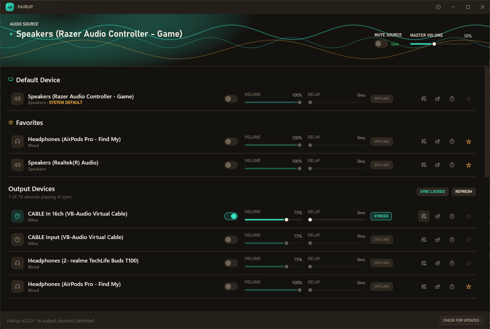
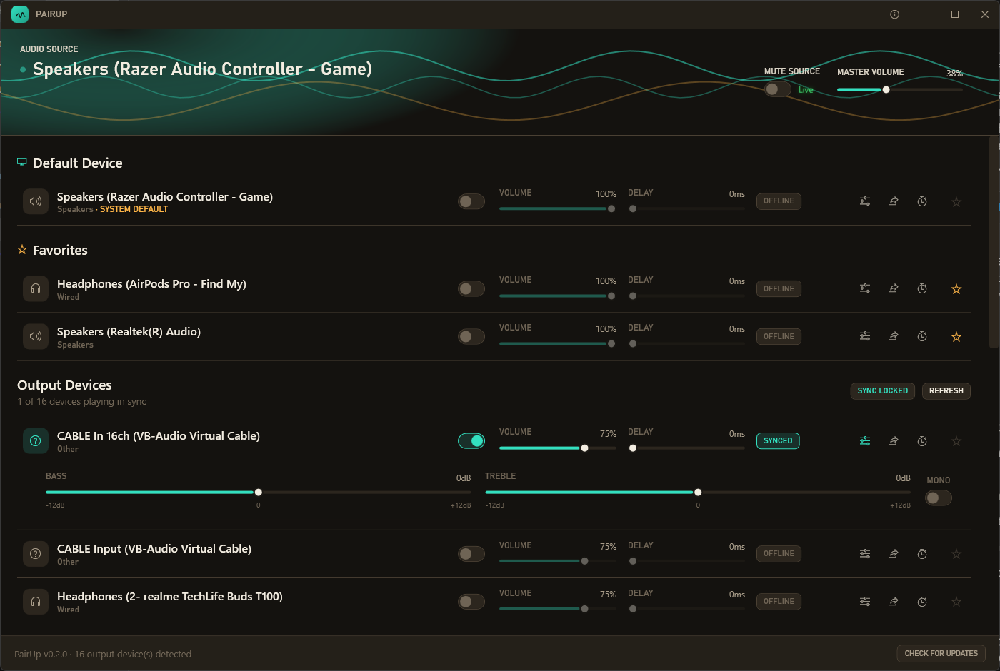
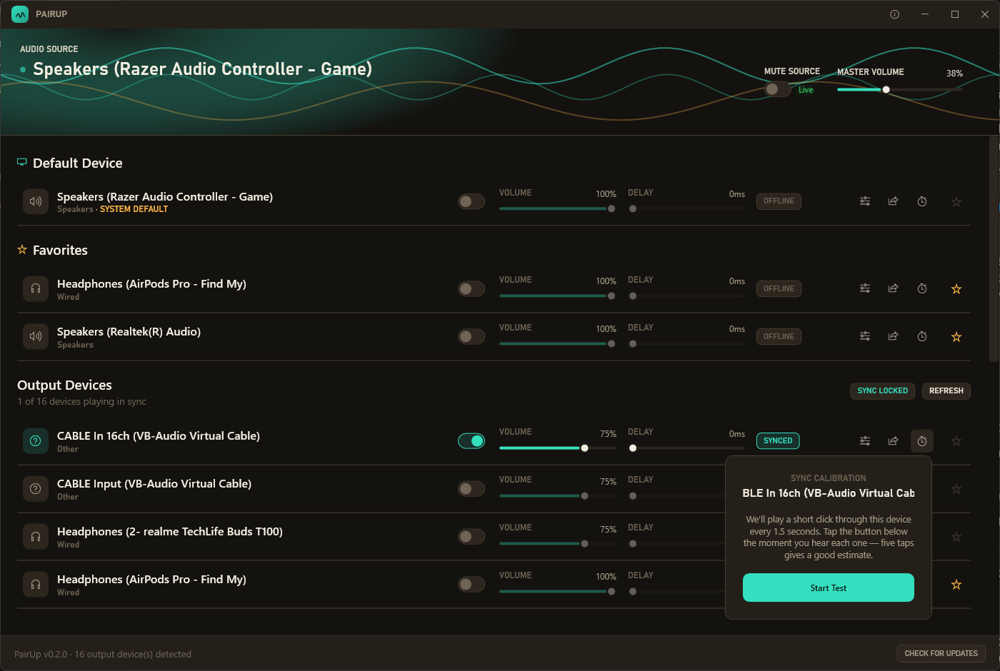
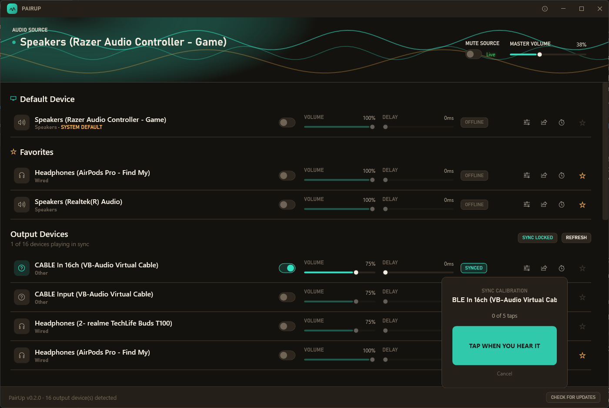
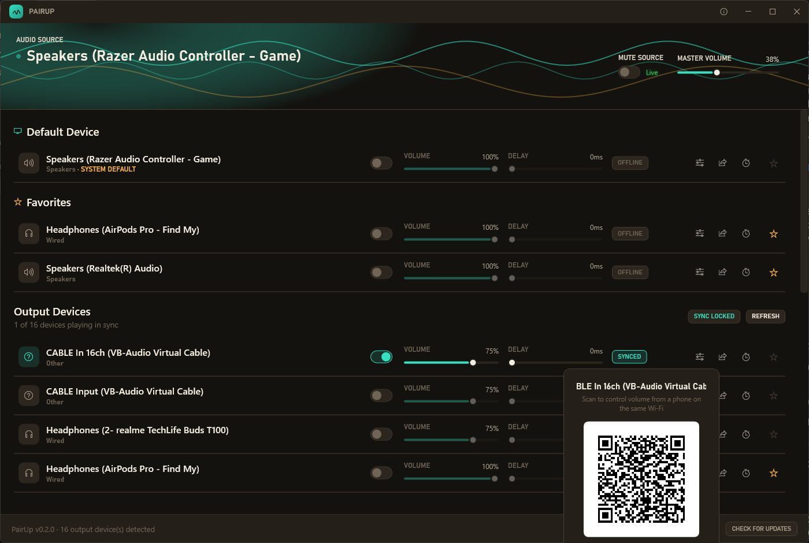
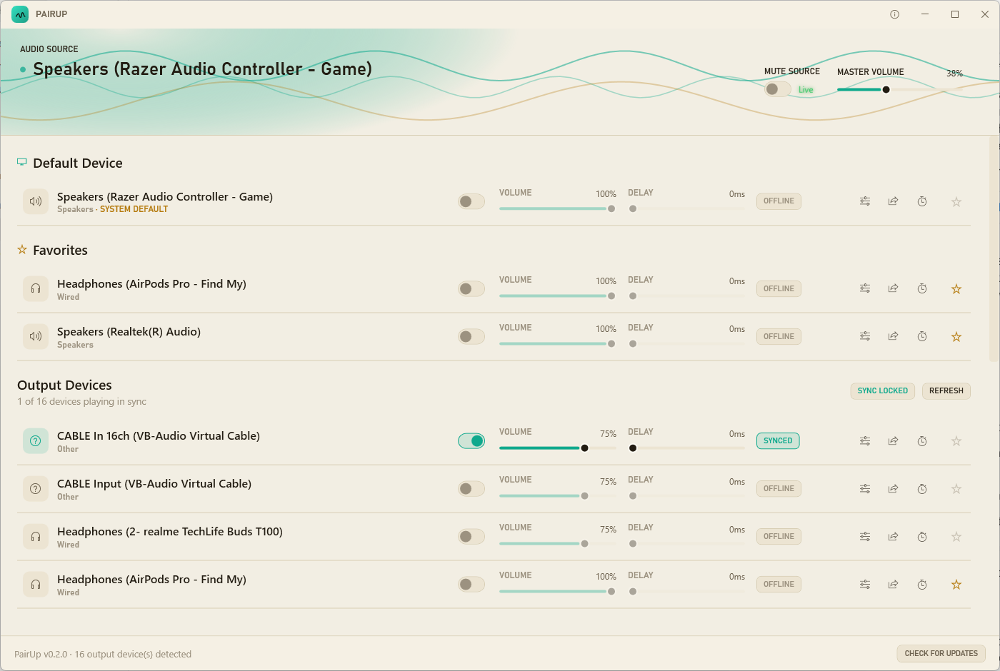

PairUp streams whatever's playing on your PC to every Bluetooth headphone, wired headset, and speaker in the room — all at once, all in sync. No virtual driver, no fuss.

Every feature exists because someone actually needed it on a Friday night.
PairUp listens in on whatever's already playing on your PC — no changing your default device, no rerouting anything. Every connected headphone, headset, or speaker gets its own independent volume and delay, kept in sync by a background balancer so nobody drifts out of step over a long session.
Bass and treble shelving EQ per device, plus a mono downmix toggle for older single-earbud devices that would otherwise lose half the mix. Settings are remembered per device, so everyone's headphones sound the same way next time too.

Tap Calibrate on any device and PairUp plays a short click every 1.5 seconds — tap along as you hear each one, and it estimates that device's real perceived delay from your taps, correcting for reaction time automatically.


Share a QR code and PIN for a lightweight web page served on your own Wi-Fi — no app install, no account. Guests get volume, mute, and EQ for their own device only. Nobody else's device is exposed.

Light or dark, PairUp follows your system setting the instant you switch it — no restart required. Built to feel like it belongs on your desktop, not bolted onto it.

Three steps, no drivers to install.
PairUp taps into whatever's already playing on your PC's current default output — nothing changes about how your system plays audio.
Each connected device gets its own independent render chain — volume, delay, and EQ, all from the same synced source.
A background balancer continuously checks every device's buffer and nudges anyone who's drifted, so long sessions stay locked together.
Pin your regulars to the top so you're not hunting through every Bluetooth device that's ever paired with your PC.
Adjust it in PairUp or the Windows flyout — they stay in lockstep, mute included.
A real FFT-driven waveform that reacts to what's actually playing, not a canned animation.
Minimize or close to keep PairUp running quietly — toggle devices right from the tray menu.
PairUp checks for new releases in the background and tells you when one's ready — no manual downloading.
MIT licensed, source on GitHub. No account, no telemetry, no catch.